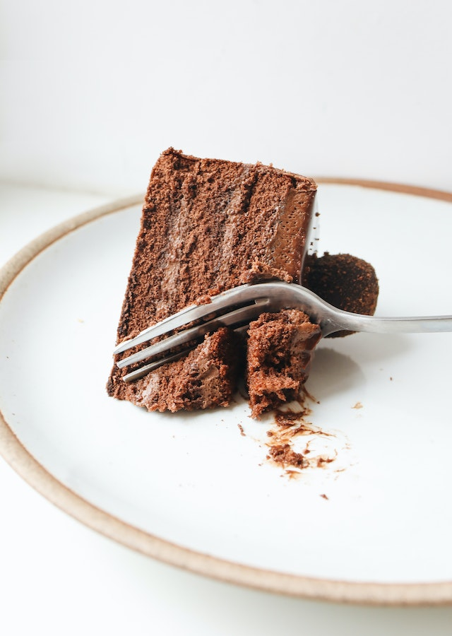

Bolo de Chocolate
10 de janeiro de 2023
Ingredientes:
2 xícaras de açúcar
1 e 3/4 xícaras de farinha de trigo

3/4 xícaras de cacau em pó
1 e 1/2 colher de chá de bicarbonato de sódio
1 colher de chá de sal
2 ovos
1 xícara de leite
1/2 xícara de óleo vegetal
2 colheres de chá de essência de baunilha
1 xícara de água quente
Modo de preparo:
Preaqueça o forno a 180°C e unte uma forma de bolo com manteiga e farinha de trigo.
Em uma tigela grande, misture o açúcar, a farinha de trigo, o cacau em pó, o bicarbonato de sódio e o sal.
Adicione os ovos, o leite, o óleo vegetal e a essência de baunilha à mistura seca e bata com uma batedeira em velocidade média por cerca de 2 minutos.
Adicione a água quente à mistura e mexa até que a massa esteja homogênea.
Despeje a massa na forma de bolo e leve ao forno por cerca de 35-40 minutos, ou até que um palito inserido no centro do bolo saia limpo.
Deixe o bolo esfriar completamente antes de decorar com cobertura de chocolate ou glacê de açúcar.